Next: Convective interpolation Up: Determination of facial values Previous: Determination of facial values Contents
Although the primary variables are determined at the element centers the governing equations require their values at the element faces, as well as their gradient at the centers and faces. Let us have a look at a typical element P and one of its neighbors F (Figure 152; P and F will be used to denote the elements as well as their centers).
Based on the values of a variable  at the element centers P and F the
value in the center f of face f is looked for. To that end the following
vectors are defined:
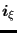 is a unit vector connecting P with
f, while
at the element centers P and F the
value in the center f of face f is looked for. To that end the following
vectors are defined:
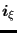 is a unit vector connecting P with
f, while
 is the normal vector on face f at its center f
(pointing way from the element). The angle between both is
is the normal vector on face f at its center f
(pointing way from the element). The angle between both is
 . Furthermore,
. Furthermore,
 is a vector connecting P with F,
is a vector connecting P with F,
 is the angle between
is the angle between
 and
and
 , Q
is the orthogonal projection of f on the straight line connecting P with F and
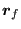 connects Q to f. The value
, Q
is the orthogonal projection of f on the straight line connecting P with F and
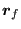 connects Q to f. The value  can now be approximated
by
can now be approximated
by
where  is the Euclidean distance between Q and F. The next better
approximation takes
into account:
is the Euclidean distance between Q and F. The next better
approximation takes
into account:
To this end the gradient is approximated by
The value of the gradient at the element centers can be obtained from the facial values. Indeed, by Gauss the following applies:
| 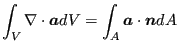 | (500) |
for an arbitrary vector
 . Setting
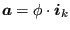, where
. Setting
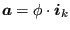, where
 is a unit vector in carthesian
direction k, one obtains
is a unit vector in carthesian
direction k, one obtains
 |
(501) |
and
 |
(502) |
From which one obtains
where the sum is over all faces f belonging to element P,  is the
value of
is the
value of  at the center of face f, 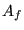 is the area of face f and
at the center of face f, 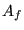 is the area of face f and  is the volume of element P.
is the volume of element P.
The calculation of  is usually done
iteratively using the following steps:
is usually done
iteratively using the following steps:
Steps 2 up to 4 can be repeated to improve the value of  further. Usually one such extra iteration is sufficient. Notice that
can be used as an approximation of
further. Usually one such extra iteration is sufficient. Notice that
can be used as an approximation of
 .
.
For a boundary element (Figure 153) the situation is slightly different. The value at Q is now extrapolated from the center value at the neighboring element W (if any) bordering the face opposite to face f:
| 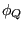 |  |
(504) |
| 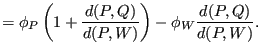 | (505) |
Apart from this, the situation is completely analogous. If no element on the
opposite side exists the center value is taken, i.e.
 . This
also amounts to
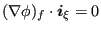. Notice also that for a
boundary element
. This
also amounts to
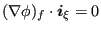. Notice also that for a
boundary element
 .
.
The preceding discourse is generic and, although explained here for
2-dimensional elements applies in 3 dimensions equally well. In fact, CalculiX
only knows three-dimensional hexahedral, pentahedral and tetrahedral fluid
elements. In the following the values of  and
and
 obtained in the above way will be denoted by
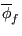 and
obtained in the above way will be denoted by
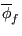 and
 , respectively.
, respectively.
 , however, can be further improved. The value of
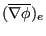 (Figure 154), as calculated in step 3 above,
depends on
and
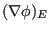. These depend on the values
of all faces belonging to elements P and E, respectively
(step 2). Each of these depends on the neighboring element values,
e.g.
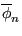 depends on 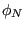 and
, however, can be further improved. The value of
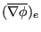 (Figure 154), as calculated in step 3 above,
depends on
and
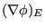. These depend on the values
of all faces belonging to elements P and E, respectively
(step 2). Each of these depends on the neighboring element values,
e.g.
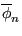 depends on 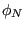 and  (step 1). Overall,
all dashed elements in addition of element P and E in the figure contribute to
. If, instead of just performing steps 1 through 3, steps 1-2-3-4-2-3 are
taken, the values in the vertically dashed elements in Figure 155 will
also contribute.
(step 1). Overall,
all dashed elements in addition of element P and E in the figure contribute to
. If, instead of just performing steps 1 through 3, steps 1-2-3-4-2-3 are
taken, the values in the vertically dashed elements in Figure 155 will
also contribute.
However, for consistency it has proven vital that the simple neighbor relationship
| 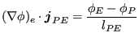 | (506) |
be satisfied (
 ). This can be obtained by setting
). This can be obtained by setting
 |
(507) |
 is an improved value of the facial gradient. It will be
denoted without bar on top.
is an improved value of the facial gradient. It will be
denoted without bar on top.

![$\displaystyle \phi_f \approx \phi _Q \approx \frac{[\phi_P d(Q,F) + \phi_F d(Q,P)]}{d(P,F)},$](img1638.png)

![$\displaystyle (\phi,_k)_P \approx \frac{1}{V_P} \left [ \sum_{f}^{} \phi_f (n_k)_f A_f \right],$](img1647.png)